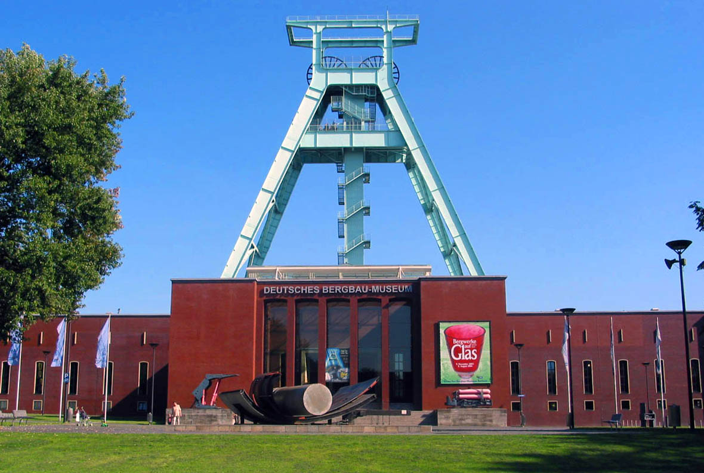
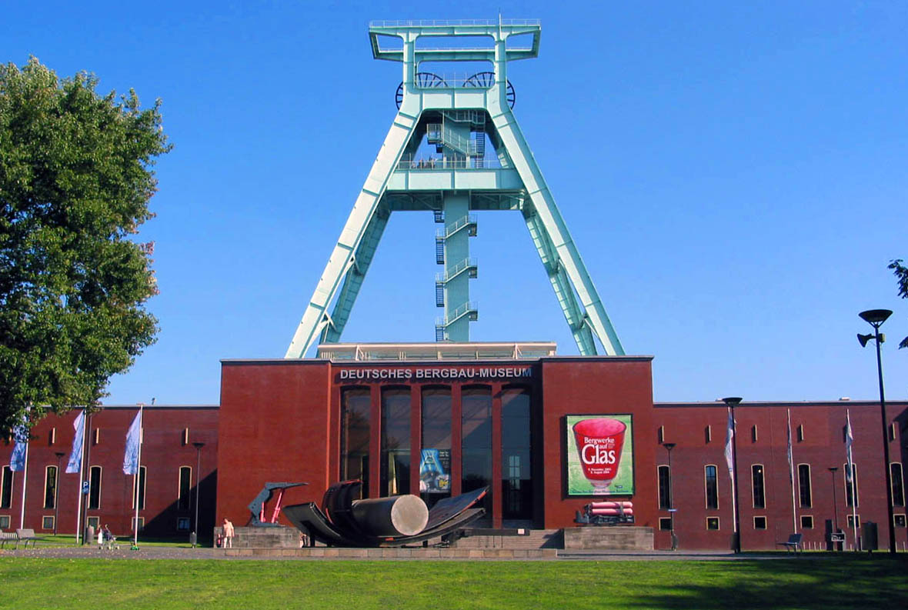

IEEE Computer Society Annual Symposium on VLSI,
July 3-5, 2017,
Bochum, Germany


Sponsored By:


Technical Co-Sponsors:


ISVLSI 2017 will host a Ph.D. forum, providing opportunity for Ph.D. students to present their thesis work to a broad
audience in the VLSI community from both industry and academia. The Ph.D. forum may also help students to establish
contacts for entering the job market. On the other side, representatives from industry and academia get a glance of state-of-the-art in system design and design automation.
Eligibility
Students who have finished their Ph.D. dissertation/thesis within the last 12 months or students who will finish their thesis work in less than one year.
Selection
Approximately 10 students will be selected for oral presentation at ISVLSI 2017 and will also have their papers included in the proceedings.
Benefit to the selected students
-
4-page publication in the ISVLSI 2017 proceedings (indexed in IEEE eXplore).
-
10 minutes oral presentation.
-
Presentation in poster session for Ph.D. Forum.
-
50% discount on the registration fee for the top 5 PhD works.
-
N
etworking
with presenters from industry and academia.
-
Opportunity to publicize work, distribute flyers summarizing PhD work.
-
Best PhD poster award will be presented during conference banquet. Award based on presentation and poster quality.
Author Information
-
Please submit a paper in IEEE conference format describing problem addressed in the thesis, novelty of the solution, observations and analysis. Focus should be on the scientific challenges and solutions. IEEE template can be found at this link.
-
Page limit: 4. Please do not exceed the page limit.
-
Authors limit: 2 (PhD candidate and advisor). Please do not exceed the author limit.
-
The submission should not include author information to enable blind review.
-
A single pdf file should be submitted using the following link “Paper Submission”.
Important Dates:
Paper Submission Deadline: February 24th, 2017
Acceptance Notification: April 15th, 2017
Submission of Final Version: May 12th, 2017
For inquiry please contact: The "Ph.D. Forum Chair" Monica Pereira from the Organizing Committee list.
NOTE:
The
IEEE Technical Committee on VLSI is sponsoring 3 student travel
awards of $250 each for travel to ISVLSI 2017. In addition, $150
has been approved for a best paper award:
(1) TCVLSI Student Travel Award ‐ 3 ‐ $250 each ‐ $750
(2) TCVLSI Best Paper Award ‐ 1 ‐ $150 each ‐ $150
 

This site is maintained by:
ISVLSI 2017 Web Chair
Theo Theocharides (ttheocharides@ucy.ac.cy), University of Cyprus.